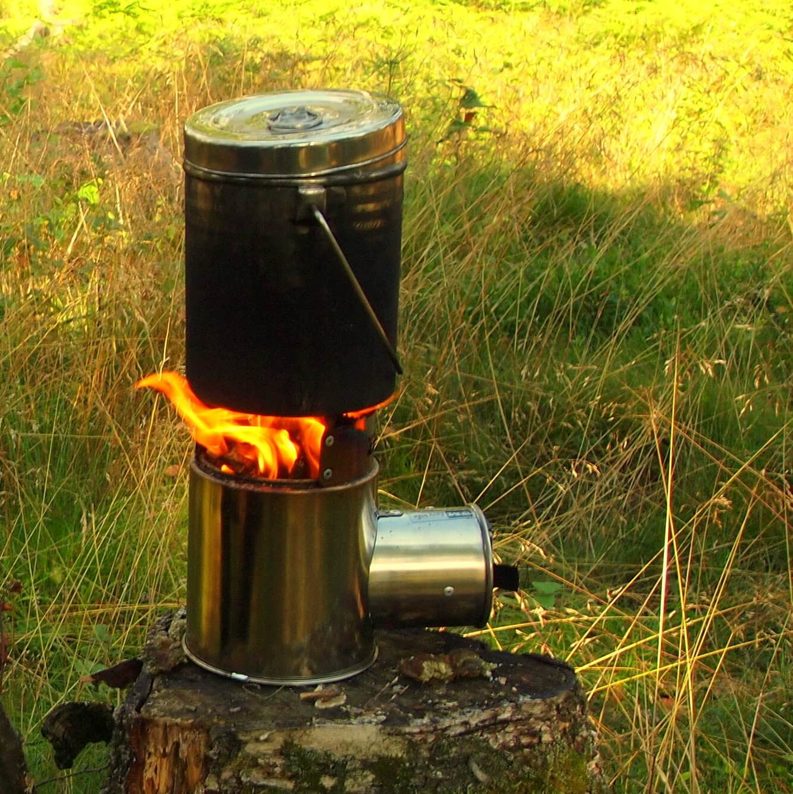
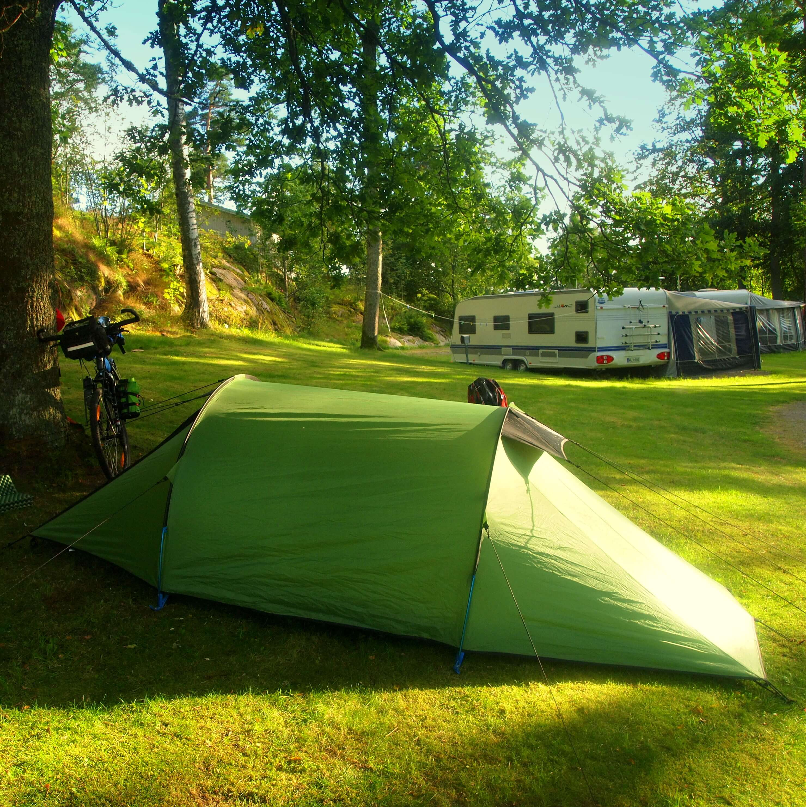
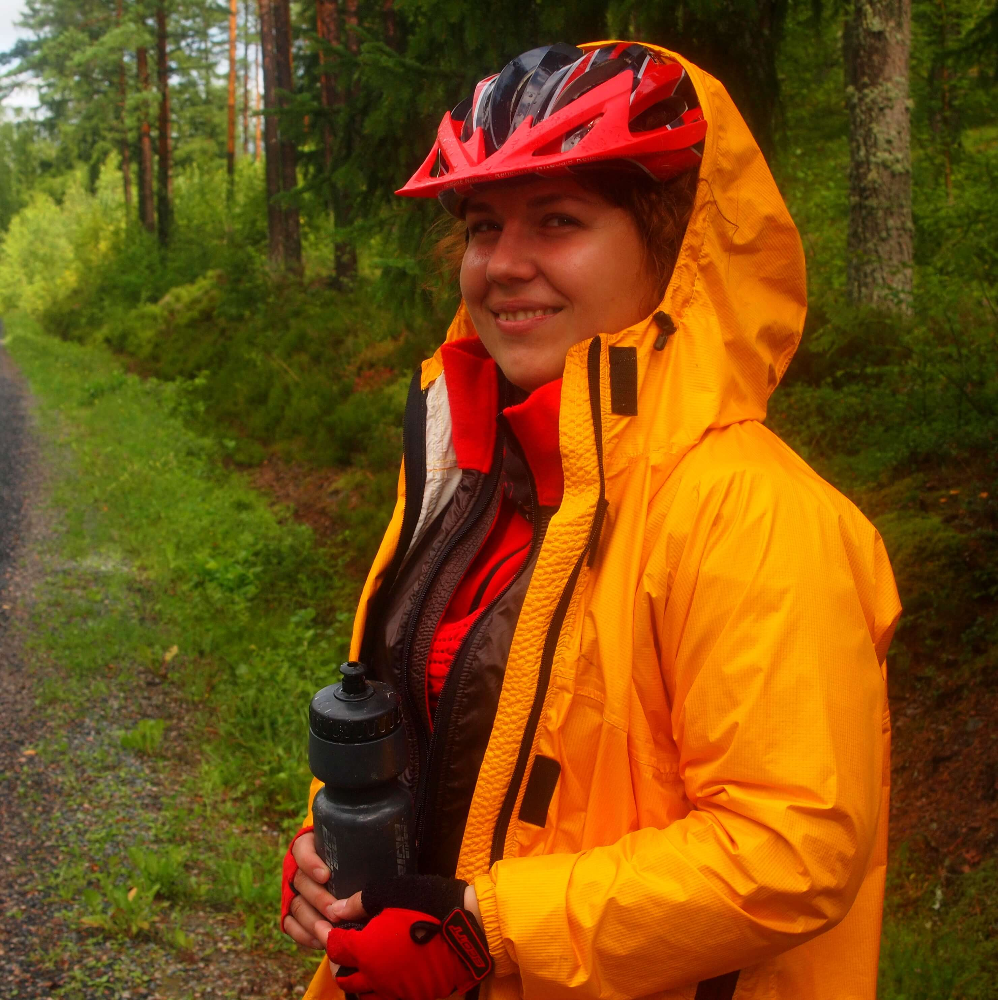
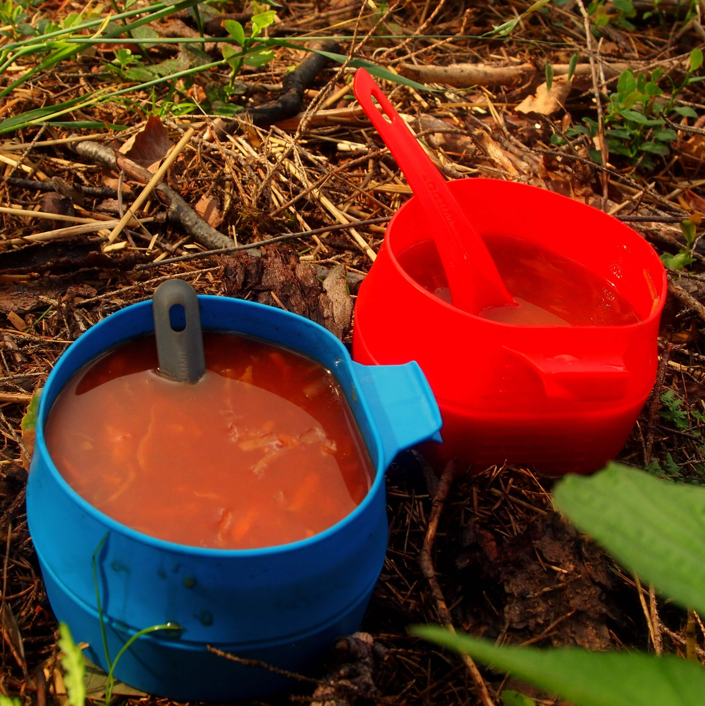
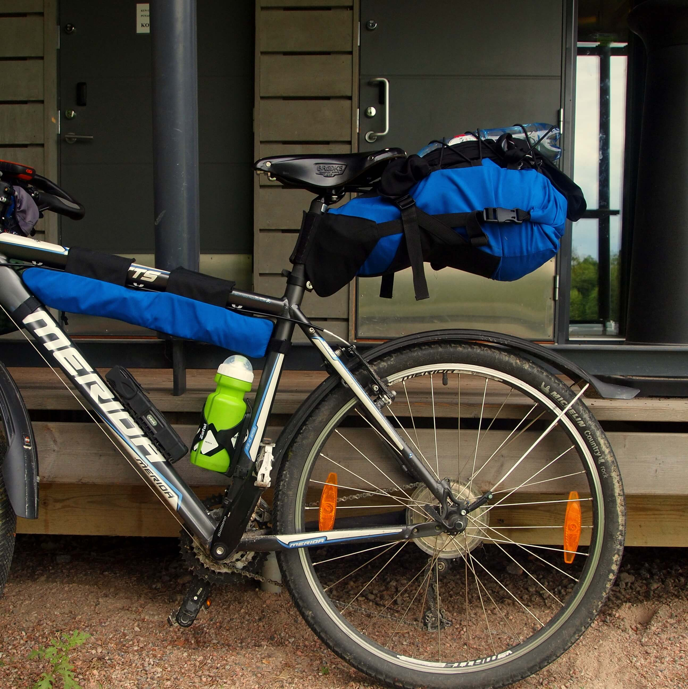
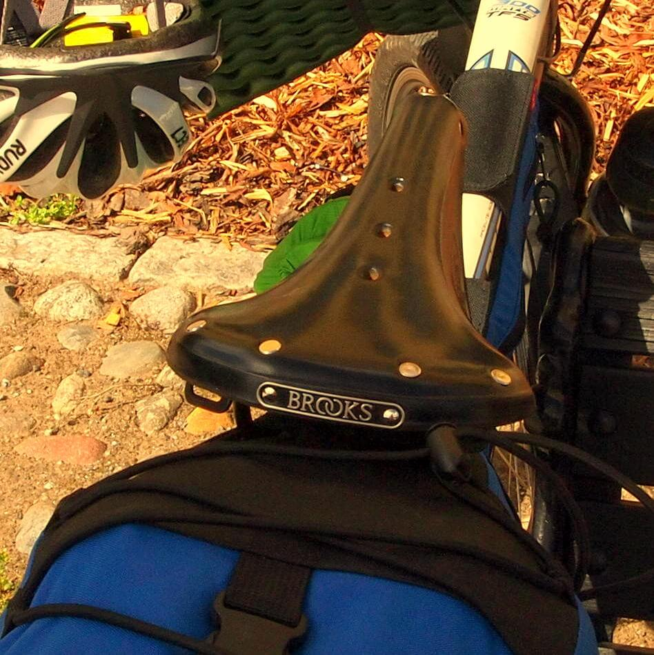
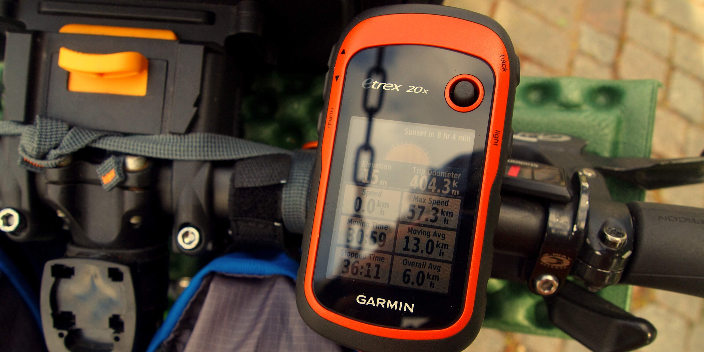

Gear
The successful outcome of a trip in no small part depends on a proper gear selection. Here are the details about some of the gear that we used during our bikepacking tour.
Portable solid-fuel stove
Instead of using classical liquid gas or alcohol stove, we decided to experiment with an innovative solid-fuel stove made by AirWood. It’s an energy-efficient double-layer stove with a battery-powered fan to increase airflow. Anything that burns can act as a fuel - wood chips, cones, small branches, etc. Due to the fan, the influx of oxygen is so high that the even the fully drenched firewood (like, after the half day-long pouring rain) actively burns in the stove. During our trip we planned to use a canister gas stove as a backup for rainy days, but actually it wasn’t needed (even though most of the days were rainy!), the AirWood stove handled everything without issues.
Tent
Lightweight and reliable tent is essential for comfortable bikepacking. At first we planned to choose an ultralight tent, but all the available options appeared to be too cramped for our tastes. Eventually we’ve settled with Wild Country Hoolie 2 tent: while being heavier than ultralight variants, it was much more spacious. One of the additional benefits of the tent was the design allowing it to be set in the rain while keeping the inner layer dry. Overall, the tent proved its worth providing a cosy shelter from Finnish rains and heavy winds.
Lightweight membrane jacket
Ultralight one-layer membrane jacket, as well as many other lightweight modern clothes were made to measure for us by Ukrainian company RoKet. They proved to be better (and better fitting!) than the best available alternatives from mass-made brands.
Wildo cups
Extremely lightweight foldable cups that can also be used as soup bowls. Made in Sweden out of BPA-free heat-resistant plastic. More details on official website.
Bikepacking bags
In comparison to traditional bicycle panniers, bikepacking bags provide much better weight distribution. As a result, bicycle handles better than the one loaded with panniers, so it can be used to travel on much rougher terrain. In our journey we’ve used bikepacking bags sewn by Ukrainian company Fast-n-Light - two 17L seatpacks, one 15L handlebar bag, 4 small (0.5L) “feeder” bags, and a custom made framebag. The disadvantages of this style of bags are lesser volume available and more skill required to pack the bags properly, as well as somewhat lacking easy-accessible storage space. However, minimalist approach, usage of lightweight compact gear, and some amount of practice make those disadvantages negligible.
Brooks saddles
The legendary Brooks B17 saddle that is being produced in England for more than a hundred years is the most popular saddle for long-distance touring, including around-the-world tours. Bicycle saddles are like shoes, either they fit or they don’t. For us, Brooks B17 fitted perfectly and provided the comfortable ride for all the duration of the journey.
GPS Device
In the day and age of smartphones one might question the need for stand-alone GPS device: why bother when the phone provides similar functionality on a bigger screen? Still, in the course of our trip we’ve found out that specialized device has its merits. In comparison to smartphone, Garmin eTrex 20x that we’ve used provided the following benefits:
- Much longer battery life. How long would a typical smartphone last with a screen always on, GPS unit running and the track constantly being recorded? 3-4 hours, at best. Garmin eTrex 20x lasts about 4 days in such conditions.
- Uses a pair of AA batteries as an energy source. Such batteries can be purchased almost anywhere (even in not-so-civilized locations). Plus a supply of batteries can be stored up, allowing the device to last for weeks afar from any electrical network.
- The device is rugged. Being attached to the handlebars, it can endure the constant vibration from bumpy gravel roads, it survives falling down on the granite rocks, etc.
- Waterproofness. The device can be completely submerged, so you shouldn’t be worried when using it under the pouring rain. As an added bonus, you can wash it in the river if it gets too dirty.
- GPS unit in Garmin device just works better, finds the satellites faster than even the best smartphones.